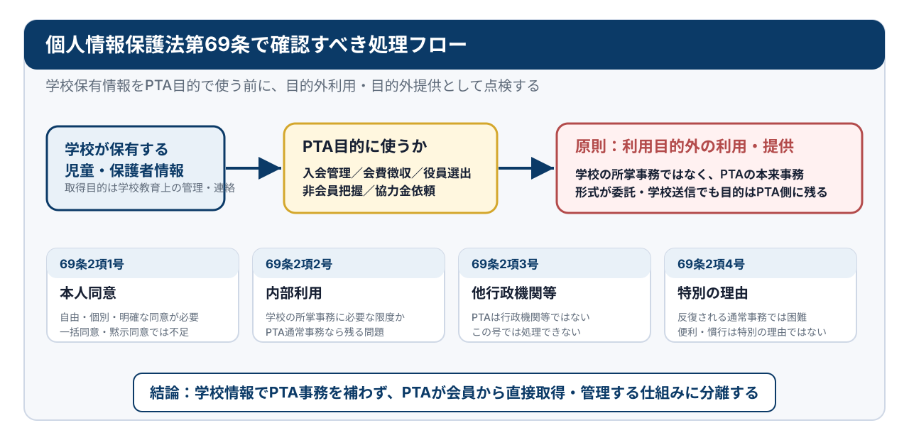
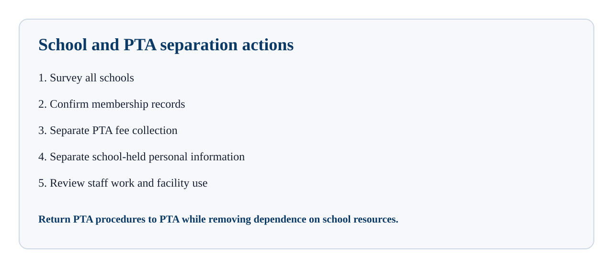

PTAと学校の分離原則
PTAを適正な任意団体として運営するために
PTAの適正化とは、PTAを否定することではありません。保護者と教職員が任意の意思に基づいて参加し、会員の合意と責任で運営する社会教育関係団体として、PTAを正常な位置に戻すことです。
そのためには、学校の施設、名簿、徴収金、連絡手段、教職員の勤務時間にPTAの本来事務を埋め込まないことが必要です。入会意思の確認、会費徴収、会員名簿、役員選出、免除審査、内部連絡は、学校手続ではなくPTA自身の手続として整理されなければなりません。
教育委員会が確認すべき対象は、PTA内部の議決や役員人事そのものではありません。学校が任意団体の入会管理、会費徴収、名簿作成、役員選出、連絡、施設利用を支えていないかという、学校運営上の公私分離です。
1 現場で起きている混在運用
全国の学校現場では、PTAが任意団体であるにもかかわらず、入学・進級時の学校手続とPTA手続が一体化し、保護者が明確な入会意思を示す前に会員として扱われる運用が見られます。
問題は、単に「入会申込書があるかないか」だけではありません。入会申込書という名称の文書があっても、非加入を選ぶ欄がない、提出しない場合の扱いが不明確である、入会同意・名簿提供同意・会費徴収同意が一体化している、役員希望調査や免除申請が先行しているなど、実質的には加入を前提とした手続になっている場合があります。
典型的には、入会意思を確認する前に、役員希望調査、委員希望調査、免除申請、くじ引き、会費引落しの案内が進みます。保護者は「加入するかどうか」を問われる前に、「どの役を担うか」「免除が認められるか」「会費をどう支払うか」という事務に組み込まれます。
さらに、入学式や学校説明会の流れの中でPTA説明が行われ、学校徴収金とPTA会費が同じ通知や同じ口座引落しで扱われ、学校連絡ツールや児童経由配布でPTA内部事務が流れると、保護者から見ればPTAは学校手続の一部に見えます。
この状態では、任意加入という表示があっても、加入しない自由、会費を支払わない自由、役員選出の対象にならない自由は実質的に選びにくくなります。問題は、PTAがあることではありません。PTAの本来事務が、学校の場、学校の信用、学校の名簿、学校徴収金、学校連絡手段、教職員の勤務時間を通じて処理されていることです。
したがって、教育委員会が確認すべき対象は、PTA内部の自治そのものではありません。学校が、任意団体であるPTAの入会管理、会費徴収、名簿作成、役員選出、免除審査、連絡、施設利用、教職員関与を支えていないかという、学校運営上の公私分離の問題です。
このページでは、こうした混在運用を出発点として、入会申込記録、学校施設利用、学校保有個人情報、学校徴収金との抱き合わせ、学校連絡ツール、児童経由配布、教職員のPTA事務従事、学校管理職のPTA役員兼任を順に点検します。
2 学校施設利用は当然ではない
学校教育法第137条は、学校教育上支障のない限り、学校施設を社会教育その他公共のために利用させることができる旨を定めています。また、公立学校施設の目的外使用は、地方自治法第238条の4第7項に基づく行政財産の目的外使用の問題としても整理されます。
したがって、PTAが学校施設を利用することは当然の権利ではありません。PTAが学校と関係の深い団体であるとしても、学校施設を使う以上、学校教育上の支障がないこと、行政財産の用途又は目的を妨げないことが前提になります。
ここでいう支障は、教室が空いているかどうかという物理的問題だけではありません。学校施設内で、入会意思確認が不明確なまま役員選出、免除申請、くじ引き、会費徴収、名簿回収、内部文書の配布・回収が行われれば、保護者はそれを学校手続の一部と受け止めます。任意団体の手続が、学校施設と学校の信用を通じて進められること自体が、教育的配慮の問題になります。
教育委員会がPTAの内部運営を支配する必要はありません。しかし、学校施設を使わせるかどうか、どの条件で使わせるかは、学校管理上の問題です。少なくとも、任意加入の明示、入会申込記録の存在、非会員児童生徒への不利益の不存在、学校名簿・学校連絡ツール・学校徴収金との分離を確認する必要があります。
これらが確認できない場合、教育委員会及び学校は、PTAの学校施設利用を漫然と継続させるのではなく、目的外使用許可の条件を見直すべきです。少なくとも、入会手続、役員選出、会費徴収、免除申請、名簿回収等を学校施設内で行わせない措置を検討する必要があります。
これはPTAの自治への介入ではありません。学校施設という行政財産を、どの条件で使用させるかという学校管理上の判断です。PTAが学校施設を利用する場合であっても、PTAの本来事務はPTA自身の責任で行われ、学校の施設・信用・名簿・徴収金・連絡手段に依存しない形に分離されなければなりません。
3 PTA入会は契約行為である
PTA入会は、保護者とPTAとの間で成立する契約行為として整理されます。契約は当事者の意思に基づき、申込みと承諾によって成立します。PTAに入会する自由がある以上、入会しない自由もあります。学校やPTAが、入学又は在籍を理由に保護者を当然に会員として扱うことはできません。
入会申込記録がなければ、誰が会員であるかを確認できません。会員である根拠がなければ、会費請求、役員選出、会員名簿作成、総会議決権の付与も不安定になります。
学校や校長が、保護者の意思確認なくPTA入会を代理することはできません。学校長とPTA会長の間で委任契約、覚書、協定等があったとしても、それは学校とPTAの間の事務処理の根拠にとどまり、保護者本人に入会義務、会費支払義務、役員候補者となる義務を発生させるものではありません。
本人からの委任がないまま、学校が保護者をPTA会員として扱うなら、代理構成をとる場合には無権代理の問題が生じます。代理構成をとらない場合であっても、保護者本人の申込みとPTAの承諾が確認できない以上、契約成立の根拠は不明確です。
また、会費を支払っていたこと、役員希望調査に回答したこと、学校から配布された書類を提出したことをもって、直ちにPTA入会の承諾と扱うことはできません。それらが学校手続、学校徴収金、学校連絡ツール、児童経由配布と一体化していた場合、むしろ保護者が任意加入の意思表示をしたかどうかは慎重に確認されなければなりません。
入会意思、学校名簿のPTA提供同意、PTA会費の徴収同意、役員選出対象となることへの同意は、それぞれ性質が異なります。これらを一枚の包括的な書面や、学校手続の中に埋め込まれた提出物で処理すると、保護者が何に同意したのかが曖昧になります。
教育委員会及び学校がまず確認すべきことは、各PTAが保護者本人から明確な入会申込記録を取得しているかどうかです。入会申込記録がない保護者を、学校施設利用、学校徴収金、学校連絡ツール、児童経由配布、教職員関与の場面で会員として扱うことは、直ちに見直す必要があります。
4 任意加入を隠す構造
PTAの任意加入は、単に規約のどこかに「任意」と書けば足りるものではありません。保護者が、入会するかどうかを現実に選べる手続になっていなければ、任意性は形式にとどまります。
任意加入を曖昧にする典型的な構造は、入会手続の前に役員希望調査や免除申請を行うことです。まだ会員でない保護者に対し、「委員を希望するか」「免除に該当するか」「くじ引き対象になるか」を問う運用は、加入を前提とした事務です。非加入を選ぶ前に、役員選出から逃れるための手続に誘導されることになります。
また、免除制度が、障害者手帳、診断書、母子健康手帳、介護状況、就労証明等の提出を求める形で運用される場合、単にPTA内部の役員選考問題にとどまりません。学校施設内で、学校の信用を背景に、家庭事情や健康情報を提出させる運用になれば、保護者に強い心理的圧力を与えます。
非加入を選んだ保護者や児童生徒に対し、卒業記念品、登下校班、見守り、学校行事の補助、配布物、名札、保険等について不利益を示唆することも、任意加入を形骸化させます。PTA活動の成果が児童生徒に及ぶことと、非会員保護者に加入や会費負担を迫ることは別問題です。
さらに、学校がPTA説明を入学式や学校説明会に組み込み、教職員が説明・配布・回収を行うと、保護者はそれを学校の公式手続と受け止めます。この場合、PTAが任意団体であるという説明があっても、学校が関与することで実質的な強制力が生じます。
教育委員会が求めるべき是正は、PTAに対して特定の活動内容を命じることではありません。学校が、入会前提の役員調査、免除申請、くじ引き、会費徴収、名簿取得、連絡配信を支えないことです。PTAが任意団体である以上、入会していない保護者をPTA事務の対象に置かないことが出発点になります。
5 学校保有個人情報の目的外利用
公立学校が保有する児童生徒・保護者の氏名、住所、連絡先、学年、学級、きょうだい関係、保護者連絡先等の情報は、学校教育上の管理、連絡、安全確保等の目的で取得されたものです。PTA入会管理、会費徴収、役員選出、委員選出、免除審査、非会員把握、協力金依頼は、PTAという任意団体の事務です。
個人情報保護法上、地方公共団体の機関が保有個人情報を利用目的以外の目的で利用し、又は提供することは原則として制限されます。学校が、学校保有名簿をPTAに渡す場合だけでなく、学校自身がPTAのために対象者を抽出し、PTA会費徴収、PTA文書配布、PTA役員選出、PTA連絡に利用する場合も、学校情報のPTA目的利用として点検されなければなりません。
「PTAへ名簿を渡していないから問題ない」という整理では足りません。学校が自ら学校連絡ツールでPTA文書を配信する、学校が児童経由でPTA書類を配布・回収する、学校が学校徴収金の情報を用いてPTA会費を引き落とす、学校がPTA役員選出対象者を把握する、といった場合、情報の流れは学校内部に残っていても、目的はPTA事務です。
本人同意を根拠とする場合でも、学校手続とPTA手続が一体化した状態で取得された同意は、自由な意思に基づく同意かどうか慎重に確認される必要があります。入学書類、学校徴収金書類、学校連絡ツール登録、児童調査票等の中にPTA同意を埋め込むと、保護者は学校に必要な手続だと受け止める可能性があります。

特に、非会員保護者に対する協力金依頼は、構造的に困難です。非会員だけを特定して依頼するためには、学校又はPTAが、誰が会員で誰が非会員かを把握しなければなりません。しかし、その把握自体が学校保有情報やPTA入会情報の利用に依存する場合、個人情報保護上の問題を回避できません。
PTAが会員名簿を持つこと自体は、会員から直接取得した情報に基づく限り、任意団体の内部管理として整理できます。しかし、学校の児童生徒名簿、保護者連絡先、学級名簿を前提に会員管理を行うなら、PTAの独立性は失われます。
教育委員会及び学校は、学校名簿をPTAへ渡しているかどうかだけでなく、学校がPTAのために情報を使っていないかを確認すべきです。会員情報はPTAが会員から直接取得し、非会員の情報はPTAが保有しないことを原則に、学校情報とPTA情報を分離する必要があります。
6 会費徴収と学校徴収金の抱き合わせ
PTA会費は、PTAという任意団体の会員から徴収される会費です。教材費、給食費、修学旅行費、学校徴収金等とは性質が異なります。学校徴収金とPTA会費を同じ通知、同じ口座、同じ引落し、同じ督促、同じ滞納管理で扱うと、保護者はPTA会費を学校に支払うべき費用と誤認します。
PTA会費を学校徴収金と一体で引き落とすためには、少なくとも、保護者本人がPTA会員であること、PTA会費の支払義務があること、学校がPTAのために徴収事務を行うことについて、個別に確認できなければなりません。入会申込記録がない、徴収同意がない、委任関係が不明確である場合、学校がPTA会費を徴収する根拠は不安定です。
学校長とPTA会長の間で委任契約、覚書、協定書等を作成しても、それだけでは足りません。その合意は学校とPTAの間の事務委託にすぎず、保護者本人の入会意思や会費支払義務を作り出すものではありません。また、学校が保護者の口座情報や児童生徒情報を用いてPTA会費を処理する以上、個人情報の利用目的との関係も問題になります。
会費徴収を学校が担うと、滞納管理、督促、返金、非会員管理、転出入時の精算等も学校事務に入り込みます。これは教職員の本来業務を圧迫するだけでなく、任意団体の会計責任を曖昧にします。
PTAが任意団体である以上、会費徴収はPTAが会員に対して行うのが原則です。学校が一時的に関与する場合であっても、入会申込記録、徴収同意、委任関係、情報利用、会計責任、返金手続、非会員除外の方法を文書で整理し、学校徴収金とは明確に分離する必要があります。
7 学校連絡ツールと児童経由配布
学校連絡ツール、保護者アプリ、一斉メール、学校配信システムは、学校が児童生徒・保護者に教育上必要な連絡を行うための手段です。これをPTAの入会案内、役員選出、免除申請、会費徴収、総会資料、内部アンケート、協力依頼に用いると、PTA連絡が学校公式連絡に見えます。
児童生徒を通じたPTA文書の配布・回収も同様です。学校で配られ、担任が回収し、未提出者に声をかける形になれば、保護者は学校への提出物と受け止めます。特に、入会届、非加入届、役員希望調査、免除申請、会費関係書類、個人情報同意書を児童経由で扱うことは、任意性や個人情報保護の観点から問題が大きくなります。
PTA活動が学校教育と関係することと、学校連絡手段をPTA内部事務に使うことは別です。学校が伝えるべき教育上の連絡と、PTAが会員に伝える内部連絡は分けなければなりません。
教育委員会は、各学校に対し、学校連絡ツールで配信しているPTA文書の種類、配信主体、配信対象、返信・回収の有無、未提出者対応の有無を確認すべきです。少なくとも、入会、会費、役員選出、免除、会員名簿、総会議決、非会員対応に関する連絡は、PTA自身の連絡手段で行うべきです。
8 教職員のPTA事務従事
公立学校の教職員には、職務に専念する義務があります。PTAが学校と関係の深い団体であるとしても、PTAの会員管理、会費徴収、会計処理、役員選出、免除審査、内部文書作成、総会運営等は、PTAという任意団体の本来事務です。
教職員が、勤務時間内にPTA会計、会費徴収、名簿作成、役員選出、免除申請、文書配布・回収、督促、総会資料作成を行っている場合、それが学校職務なのか、職務専念義務の免除を受けたPTA事務なのか、単なる慣行なのかを明確にする必要があります。
職務専念義務の免除や兼職兼業の整理を用いる場合でも、そのことは逆に、当該事務が本来の学校職務ではないことを示します。PTA事務を勤務時間内に行う必要があると整理するなら、なぜその団体の事務を学校職員が担う必要があるのか、どの範囲まで許されるのか、会費徴収や会計処理まで含むのか、説明が必要です。
学校とPTAの連絡調整は、学校運営上必要な範囲であり得ます。しかし、連絡調整とPTA内部事務は異なります。学校行事に関する調整、施設利用の調整、安全確保の連絡と、PTA会員を管理し、会費を徴収し、役員を選び、総会を運営することを同一視してはなりません。
教育委員会は、教職員が行っているPTA関連事務を洗い出し、学校職務、連絡調整、職務専念義務免除、PTA内部事務に分類すべきです。そのうえで、PTA内部事務はPTA自身の責任に戻し、教職員の勤務時間内処理から外す必要があります。
9 校長・教頭等のPTA役員兼任
多くの学校では、校長、教頭、副校長、教務主任等が、PTAの顧問、副会長、理事、監事、事務局等に位置付けられています。学校管理職がPTAの役員又は役職者を兼ねると、学校とPTAの意思決定が外形上も実質上も混在します。
校長が学校施設の管理者であり、学校保有個人情報の管理責任を負い、教職員の服務を管理し、同時にPTAの役職者でもある場合、施設利用、名簿提供、会費徴収、教職員関与、児童経由配布、学校連絡ツール利用について、誰の立場で判断しているのかが曖昧になります。
PTAが任意団体である以上、学校管理職がPTA役員として意思決定に深く関与することは、保護者から見て学校の公式組織と誤認されやすくなります。PTAへの加入や役員選出が学校の意向であるかのように受け止められる危険もあります。
教育委員会は、学校管理職がPTA役員を兼ねる場合、その根拠、職務との関係、勤務時間中の従事、決裁権限との関係、施設利用許可や個人情報利用判断との利益相反を点検すべきです。少なくとも、学校管理職がPTAの会員管理、会費徴収、役員選出、免除審査、会計処理に関与することは避けるべきです。
10 教育委員会が確認すべき事項
教育委員会は、PTAの内部自治に介入するのではなく、学校がPTAの本来事務を支えていないかを確認する必要があります。確認対象は、学校の施設、名簿、徴収金、連絡手段、児童経由配布、教職員の勤務時間、管理職の兼任です。
まず、各PTAについて、入会申込記録の有無を確認する必要があります。入会申込記録がない保護者を会員として扱っていないか、入会前に役員希望調査や免除申請を行っていないか、非加入を選ぶ手続が明確に示されているかを点検します。
次に、学校がPTA会費徴収に関与している場合、その根拠を確認します。学校徴収金と同じ口座で引き落としているか、学校の通知で案内しているか、未納管理や督促を学校が行っているか、保護者本人からの徴収同意があるか、PTAとの委任関係が文書化されているかを確認します。
さらに、学校保有個人情報の利用状況を確認します。学校名簿をPTAへ渡しているかだけでなく、学校がPTAのために対象者を抽出していないか、学校連絡ツールでPTA文書を配信していないか、児童経由でPTA書類を回収していないかを確認します。
教職員のPTA事務従事については、会費徴収、会計処理、名簿管理、役員選出、免除申請、総会資料作成、文書配布・回収、督促等を誰が行っているかを調査し、学校職務、連絡調整、PTA内部事務に分類します。
学校施設利用については、目的外使用許可又は施設利用の条件として、任意加入、入会申込記録、非会員不利益禁止、学校名簿不使用、学校徴収金との分離、学校連絡ツール不使用、教職員の内部事務従事禁止を確認する必要があります。
11 分離のための実務措置
学校とPTAの分離は、PTAを学校から排除することではありません。PTAを、会員の意思に基づく任意団体として自立させることです。学校が支えるべき部分と、PTA自身が担うべき部分を分けることにより、保護者、教職員、PTA役員、学校管理職のいずれにとっても責任関係が明確になります。
教育委員会は、まず全校調査を行い、入会申込記録、会費徴収経路、学校名簿利用、学校連絡ツール利用、児童経由配布、教職員事務従事、管理職兼任、施設利用条件を把握すべきです。そのうえで、学校長宛通知、校長会説明、PTA向け説明資料、施設利用条件、学校徴収金取扱基準、個人情報取扱基準を整備します。

入会については、PTAが保護者本人から個別に入会申込を受ける方式に改めます。学校は、入学手続、学校徴収金書類、児童調査票、学校連絡ツール登録とPTA入会を一体化させないようにします。入会しない保護者や児童生徒への不利益が生じないことも、明確に周知する必要があります。
会費徴収については、学校徴収金からPTA会費を分離します。PTAが会員に対して直接徴収することを原則とし、学校が一時的に関与する場合でも、委任、同意、会計責任、情報利用、返金、非会員除外を文書化します。
個人情報については、PTA会員情報はPTAが会員から直接取得します。学校名簿、学校連絡ツール、児童経由回収をPTA内部事務に使わないことを原則化します。非会員保護者の情報をPTAが把握しない運用にすることが重要です。
教職員関与については、学校行事に必要な連絡調整と、PTA内部事務を分けます。会費徴収、会計、名簿、役員選出、免除審査、総会事務はPTA内部事務としてPTAが担い、教職員の勤務時間内処理から外します。
施設利用については、PTAが学校施設を利用する場合の条件を明確化します。入会手続、役員選出、免除申請、会費徴収、名簿回収など、保護者に学校手続と誤認させる事務を学校施設内で行わせない、又は利用条件として任意性と分離を確認することが必要です。
12 結論
PTA問題の本質は、PTAが存在することではありません。任意団体であるPTAの本来事務が、学校の施設、名簿、徴収金、連絡手段、児童経由配布、教職員の勤務時間、管理職の地位に埋め込まれていることです。
入会申込記録がないまま会員として扱うこと、学校名簿を用いてPTA事務を処理すること、学校徴収金とPTA会費を抱き合わせること、学校連絡ツールや児童経由配布でPTA内部事務を行うこと、教職員が勤務時間内にPTA会計や会員管理を行うこと、校長等がPTA役員として施設・情報・労務の判断に関与することは、いずれも学校とPTAの境界を曖昧にします。
教育委員会は、PTAの内部自治を支配する必要はありません。しかし、学校が任意団体の事務を支えている場合、それは学校運営、個人情報保護、施設管理、服務管理、会計処理の問題です。教育委員会が是正すべき対象は、PTAそのものではなく、学校を通じてPTAを事実上支えている構造です。
PTAを適正に存続させるためには、学校から切り離す必要があります。学校とPTAを分離することは、PTAを弱めることではありません。保護者の自由意思に基づく、説明可能で持続可能なPTA運営に戻すための最低条件です。
関連資料
このページの論点を実務で点検するため、以下の資料を併せて利用できます。